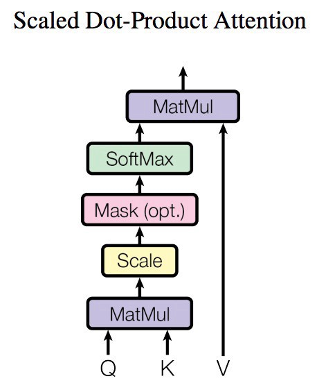

Attention 注意力机制#
本文主要涉及Self-attention和Multi-head attention
Self-attention 自注意力机制#
Transformer模型的一个关键特点是使用了称为注意力层的特殊层。这一层会告诉模型，在处理每个单词的表示时，要对你传递给它的句子中某些单词特别关注（并且忽略其他单词）。
输出的向量就是根据query和key计算得到的权重作用于value上的权重和。
可以看出，自注意力机制的核心过程就是通过Q和K计算得到注意力权重；然后再作用于V得到整个权重和输出。具体的，对于输入Q、K和V来说，其输出向量的计算公式为：
公式解读#
\(Q\) (Query)：查询矩阵，表示查询某个信息的向量或矩阵。
\(K\) (Key)：键矩阵，表示存储的信息的向量或矩阵，用来匹配查询。
\(V\) (Value)：值矩阵，表示最终输出的向量或矩阵，通常与键矩阵有对应关系。
\(d_k\)：键向量的维度，通常是键和查询的向量维度。
公式中的各部分解释：
点积\(QK^T\)：
首先，计算查询 \(Q\) 和键 \(K\) 的点积 \(QK^T\)。这个操作用于衡量查询和键的相似性，点积值越高，说明对应的键与查询的相关性越大。
缩放因子 \(\frac{1}{\sqrt{d_k}}\)：
\(d_k\) 是键向量的维度。由于在高维空间中点积值会变得较大，缩放因子 \(\frac{1}{\sqrt{d_k}}\) 用于防止点积值过大导致 softmax 函数输出过于极端，从而使得注意力更加平滑。
softmax：
softmax 函数将点积结果转换为概率分布。通过 softmax，可以为每个键计算出与查询的相似性得分。softmax 输出的是归一化的权重，用于衡量各个值的重要性。
乘以V：
最后，将经过 softmax 计算出的权重与值矩阵 \(V\) 相乘。这个步骤是将注意力权重应用到值上，计算出与查询最相关的信息。每个值的权重是根据与查询的相似性来确定的。
总体流程：
查询 \(Q\) 和键 \(K\) 通过点积和 softmax 计算相似性得分。
根据这个相似性得分，计算不同值 \(V\) 的加权和，输出最终的注意力值。
公式实例（单头）#
我们来通过一个具体的例子，详细解释注意力机制的计算过程。假设我们有以下输入：
查询矩阵\(Q\)、键矩阵\(K\) 和值矩阵\(V\) 分别是\(2 \times 3\) 矩阵，表示有 2 个查询、2 个键和值，向量维度为 3。
假设键向量维度\(d_k = 3\)，取值来自于查询向量\(Q\)和键向量\(K\)的形状。
在多头注意力机制中,参数\(d_{k}\)(每个头的维度)通常是由总的模型维度\(d_{\text{model}}\)和多头注意力的头数\((h)\)决定的。具体来说,\(d_{k}\)通常是这样计算的:
Step 1: 给定的矩阵#
假设有以下数据：
查询\(Q\) 是一个\(2 \times 3\) 的矩阵。
键\(K\) 也是一个\(2 \times 3\) 的矩阵。
值\(V\) 是一个\(2 \times 2\) 的矩阵。
\(Q,K,V\)的值分别都是通过下图进行运算出来的，我们例子上就不做运算直接举例了

Step 2: 计算点积\(QK^T\)#
点积\(QK^T\)：
这一步通过查询矩阵\(Q\) 与键矩阵\(K\) 的转置相乘，得到每个查询与所有键的相似性分数。
Step 3: 缩放点积#
为了避免较大的点积值影响 softmax 的效果，我们将点积除以\(\sqrt{d_k}\)，这里\(d_k = 3\)，所以缩放因子为\(\sqrt{3} \approx 1.732\)。因此，缩放后的点积为：
Step 4: 应用 softmax#
接下来，对缩放后的点积应用 softmax 函数。softmax 函数将每一行转化为概率分布。假设第\(i\) 行的点积值为\(a_i\)，那么 softmax 是：
对每一行应用 softmax：
对第一行\([0.577, 0.577]\)：
对第二行\([0.577, 1.154]\)：
softmax 结果为：
Step 5: 加权值矩阵\(V\)#
将 softmax 权重与值矩阵\(V\) 相乘，得到注意力的最终输出：
第一行计算：
第二行计算：
最终的注意力输出为：

自注意力机制流程#
假如我们要翻译一个词组”Thinking Machines“，其中Thinking这个词的embedding vector用\(x_1\)表示，Machines这个词的embedding vector用\(x_2\)表示。
第一步：每个编码器的输入向量（在本例中为每个单词的嵌入）创建三个向量。因此，对于每个单词，我们创建一个查询向量、一个键向量和一个值向量。（将\(x_1\)乘以\(W^Q\)会得到\(q_1\)，我们最终为输入句子中的每个单词创建一个“查询”、一个“键”和一个“值”投影。）

第二步：当我们处理Thinking这个词时，我们需要计算句子中所有词与它的注意力分数（Attention Score），因此，如果我们处理位置\(x_1\)中单词的自注意力，第一个分数将是\(q_1\)和\(k_1\)的点积。第二个分数是\(q_1\)和\(k_2\)的点积。
第三步和第四步：分数除以8（论文中使用的关键向量维度的平方根，也就是\(\sqrt{64}\)），然后将结果传递给Softmax运算。Softmax对分数进行归一化，使它们全部为正值并且加起来为1。
 第五步：是将每个值向量乘以 softmax 分数（准备将它们相加）。
第五步：是将每个值向量乘以 softmax 分数（准备将它们相加）。
第六步：对加权值向量求和。这会在该位置（对于第一个单词）产生自注意力层的输出。
 自注意力计算到此结束。得到的向量是我们可以发送到前馈神经网络的向量。
自注意力计算到此结束。得到的向量是我们可以发送到前馈神经网络的向量。
Multi-head attention 多头注意力机制#
由上面自注意力机制中可以得知，\(Q,K,V\)的矩阵是\(X\)分别乘以\(W^Q,W^K,W^V\)（权重矩阵）得到的。通过多头注意力，我们为每个头维护单独的\(W^Q,W^K,W^V\)（权重矩阵），从而产生不同的\(Q,K,V\)矩阵。
接下来我们会得到8个不同的矩阵\(Z\)

因为最终不需要8个矩阵而是只需要一个，所以需要把这8个不同的矩阵\(Z\)变成一个，如何进行呢？我们将矩阵连接起来，然后将它们乘以一个附加的权重矩阵 \(W^O\)

完整的过程可以参考下面图片